Making Conveyor Belts
By: REZ
Many things in Jedi Knight editing are hard. However here is an example of something really cool,
that's easy to make, and it can make your level much better too. I'll try to use a lot of pictures so you don't
get lost. Lets start. Open JED and you will see the basic sector.
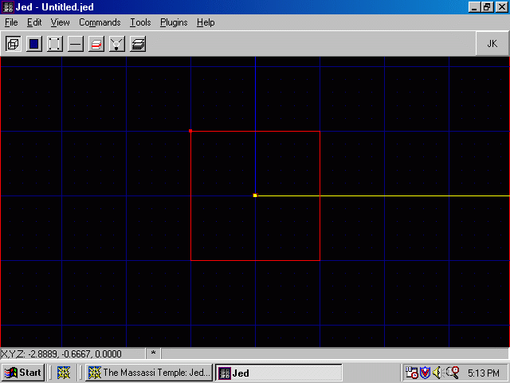
OK, let's set our snap to grid to .1 by pressing F4, Snap every: .1. Now let's go to sector mode and start cleaving. Move your walk player in to a corner to keep him out of the way. Cleave a middle sector 2 JKUs wide.
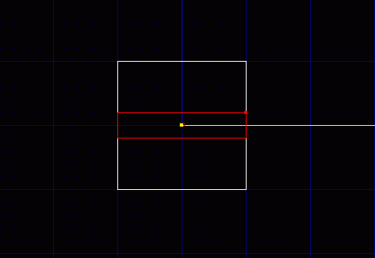
Now press Shift 3 and cleave from the floor one JKU up, across your middle sector.
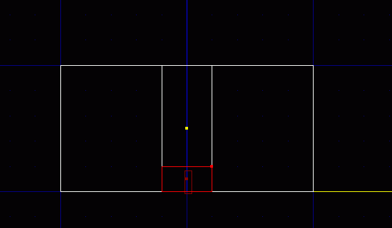
Now delete that new sector.
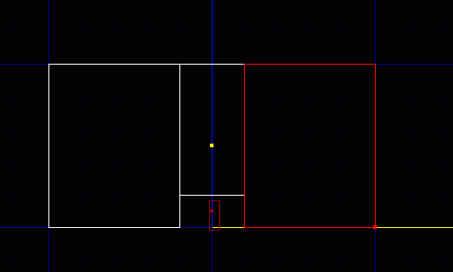
Now texture the top of that bump with 00fgrte2.mat. I like to use this mat because it works in most colormaps. Don't forget to make a note of that surface number as you will need it later. Mine is 1 5. Also set the surface flag to 5.
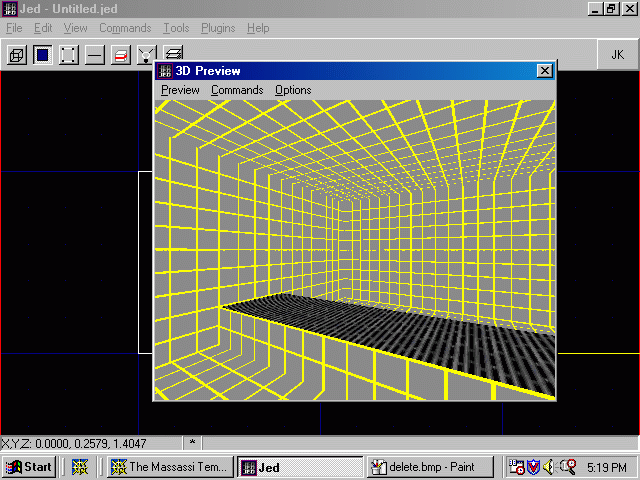
Now we pick the conveyor.cog from our cog menu by pressing F7 add cog.
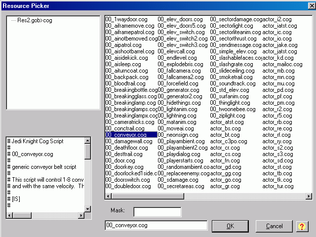
We need to find the vector for our conveyor to move. I use VecCalc for JED because it's fast and easy, download at www.DarkJedi.com. For more on vector calculation see the vectors tutorial. Make two ghost objects, one at each end and multiselect them. Fire Up VecCalc for JED and get the vector, mine is (1.00/0.00/0.00).
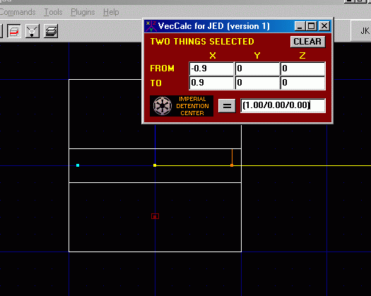
Delete those ghosts and press F7. Put the vector in the vector spot and the surface in the convey0 surface space. Press refresh.
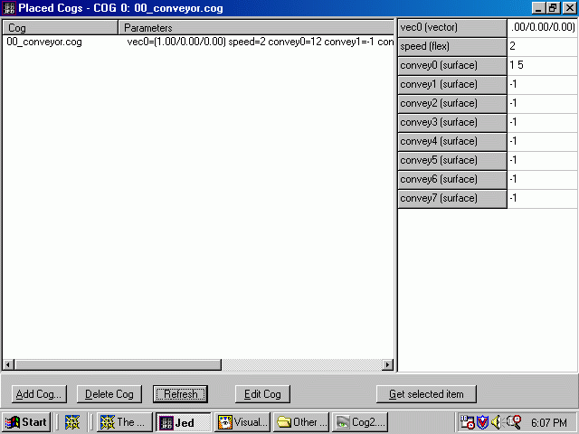
If we saved now and tried it, it would work but you can't hear it. This makes it seem very dumb. To fix this we add sector sound. Multiselect all the sectors and give it either 00conveyoramb01.wav or 00conveyoramb02.wav. Don't forget to set the volume to 1 or you won't hear it.
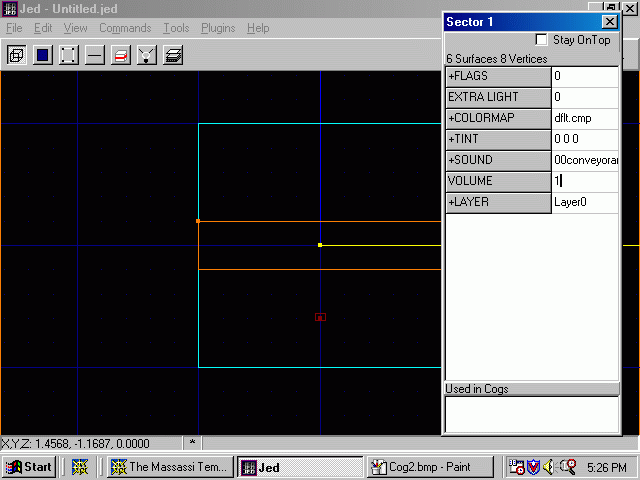
Do you want to make your belt move faster? Increases the Speed (flex) in the cog window. More than one surface? No need for another cog, if it moves the same way just add another surface value to the cog.
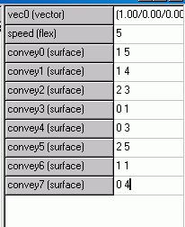
If you try it you have a working, moving conveyor belt. You may wonder why that belt looks painted on. To fix this
you'll have to do a bit more cleaving, But I won't get into that.
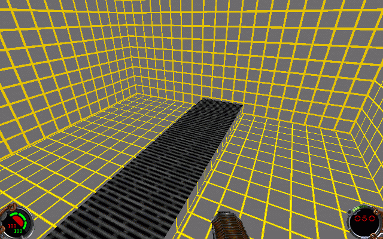
If you have any trouble you can always ask me, REZ, a question on the Editing Board and I'll help you all I can.